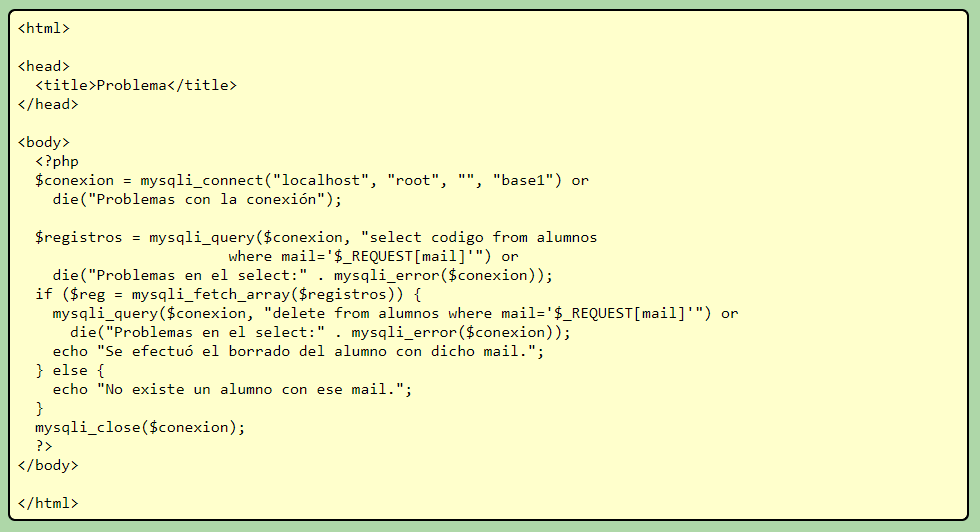

Ya vimos en las secciones anteriores cómo crear una base de datos, registrar, consultar y actualizar registros en una tabla de MySQL. En esta última veremos cómo eliminar (borrar) registros que hay en la base de datos.
Echa un vistazo al siguiente ejemplo:
Chacach. (30 de diciembre de 2015). Eliminar Registros, Php & Mysql. [Archivo de video]. Recuperado de: https://www.youtube.com/watch?time_continue=1&v=KX39hYv9HhQ
El objetivo de este punto es el borrado de un registro de una tabla. Para ello, implementaremos un algoritmo que solicite ingresar el mail de un alumno y posteriormente efectúe su borrado. Para eliminar filas en una tabla debemos utilizar el comando SQL delete. La primera página es idéntica a la consulta, ya que debemos implementar un formulario que solicite la carga del mail del alumno:

Por otro lado tenemos el archivo "pagina2.php" que se encarga de buscar el mail ingresado en el formulario y en caso que exista se procede a borrarlo:

En esta segunda página efectuamos dos llamadas a la función mysqli_query, una para consultar si existe el mail ingresado y otra para efectuar el borrado del registro respectivo. Si no existe el mail ingresado mostramos un mensaje de tal situación.